- School opens to students at 8:10am
- School day ends at 2:35pm on Monday and Friday
- School day ends at 3:30pm on Tuesday, Wednesday, and Thursday
 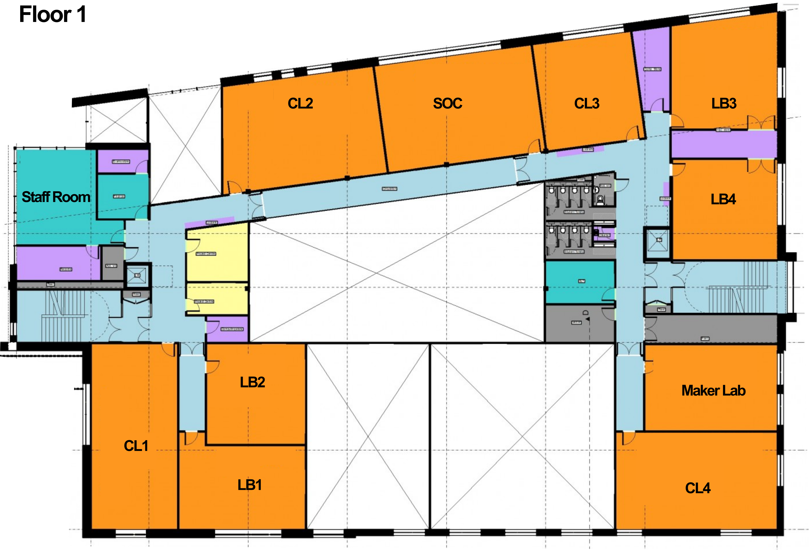
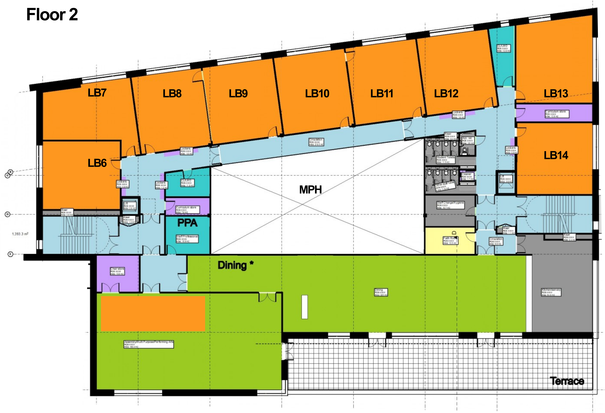
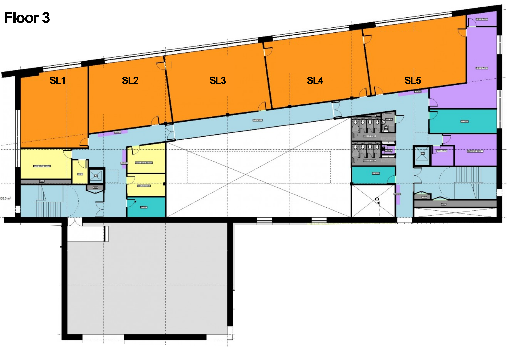
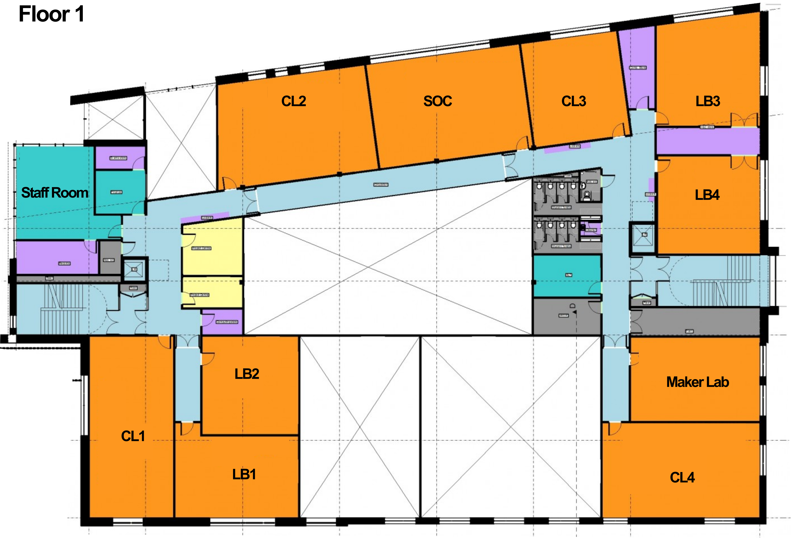
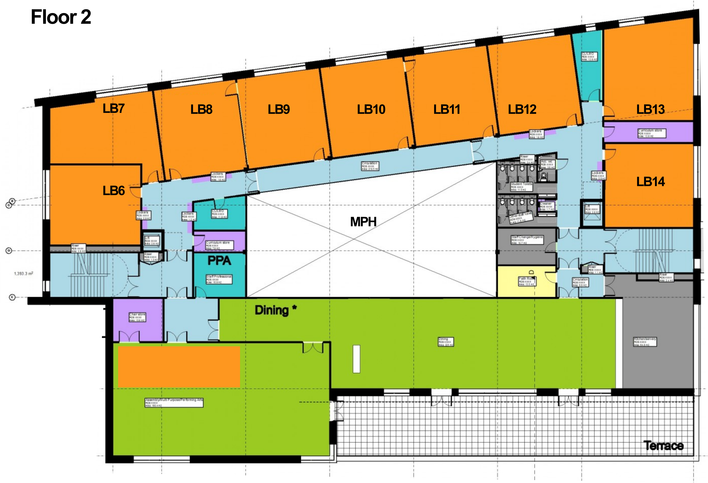
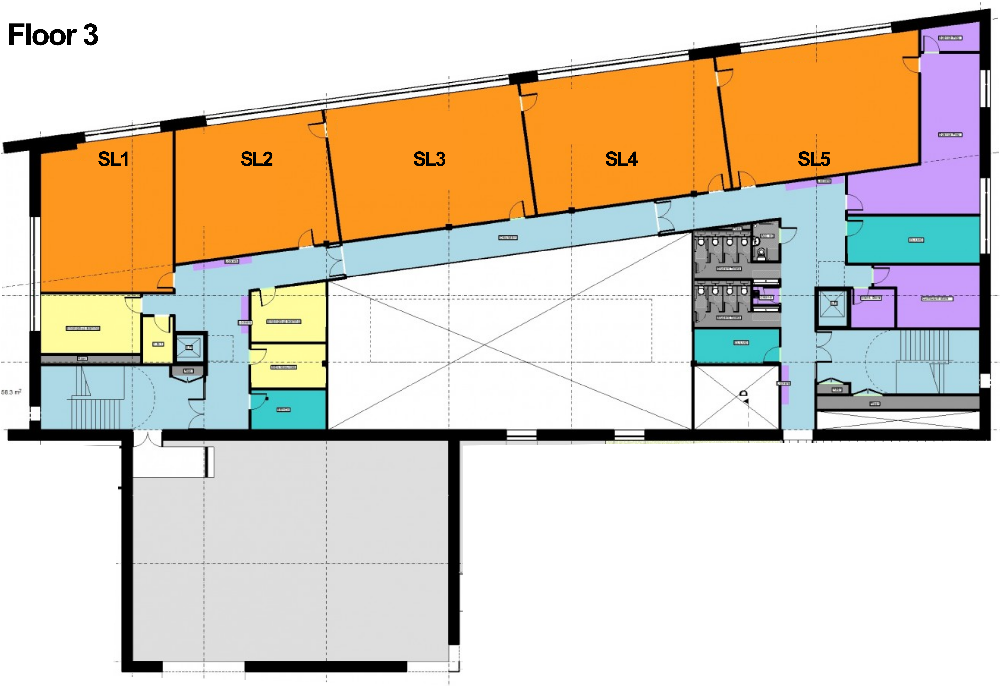
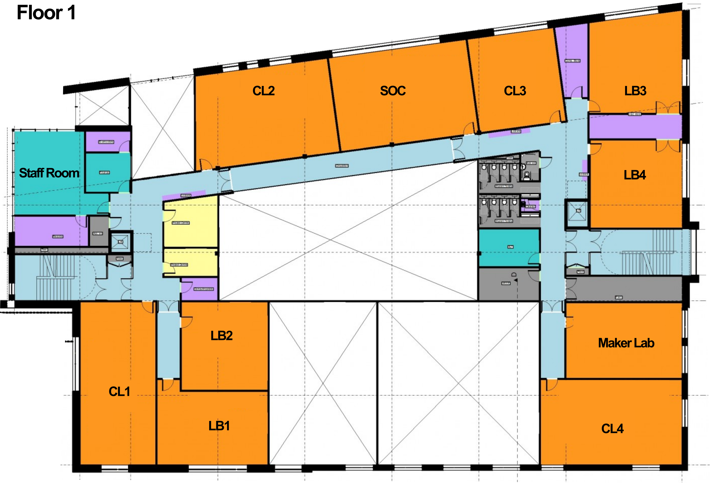
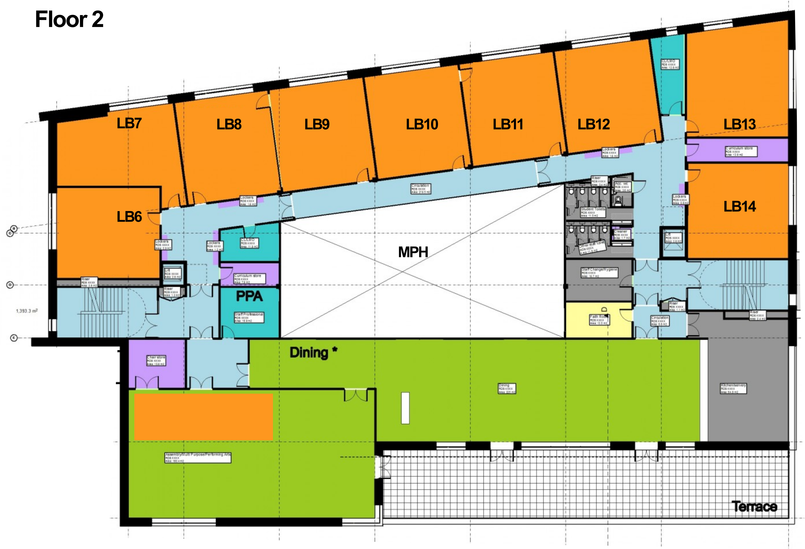
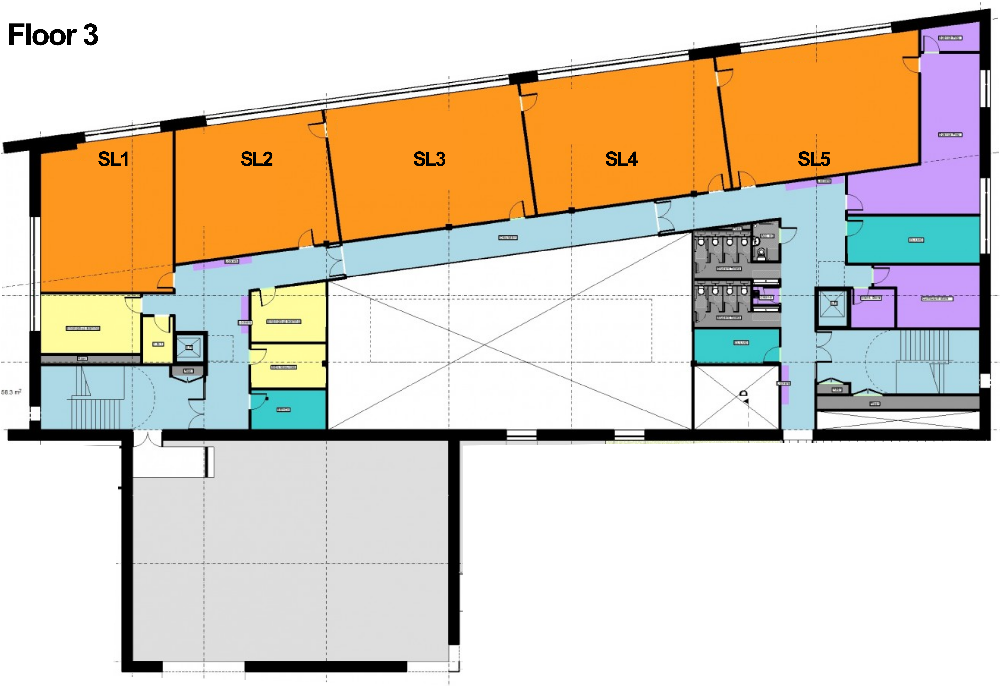
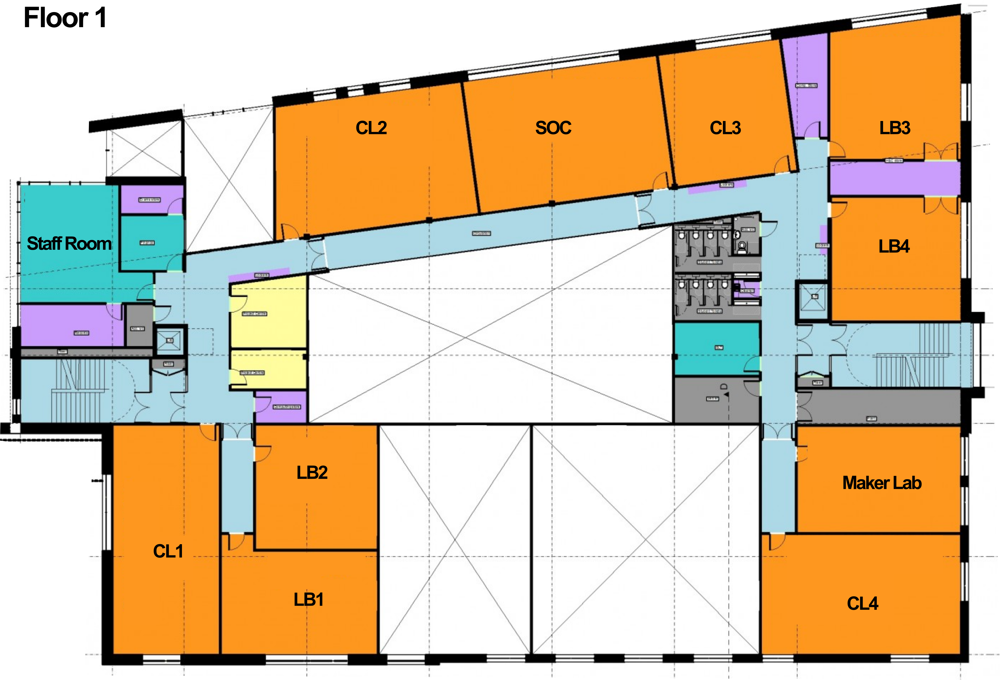
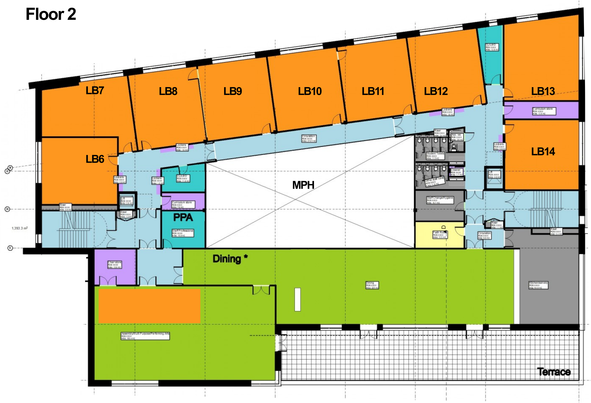
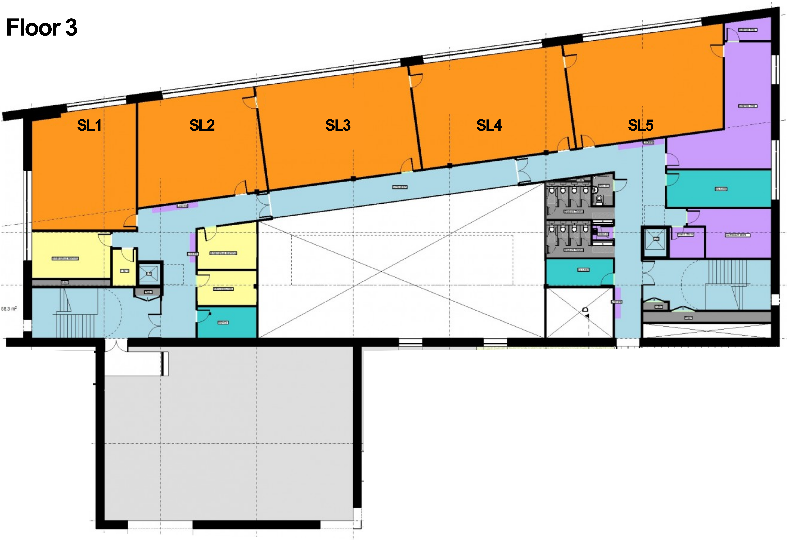

The fire alarm is tested on a Wednesday morning before students are in the building.
If the bell is continuous and not just a short beep for lesson changeover then please escort your class to the nearest exit and direct them to the muster points at the back of the UTC.
Please make sure you know where the closest emergency exits and emergency stairwells are to where you are teaching.
Please use the disabled / staff toilets not the student toilets because of safeguarding.
Please refer any concerns to the Designated Safeguarding Lead (Mrs J Stevenson)
I have read the above
Signed……………………………………… Date…………………….
Print Name…………………………………………………………………………………………..